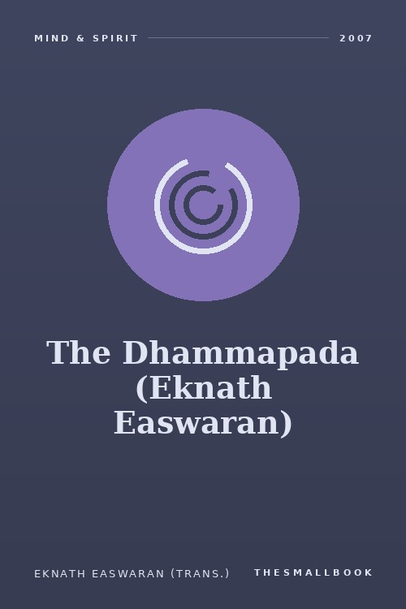

Library › Authors › Eknath Easwaran (trans.)
Books by Eknath Easwaran (trans.)
Eknath Easwaran (trans.) has one book in the library. Every book here is read down to the big idea, the lessons, the lines worth keeping and the actions worth taking. Start with the summary, then buy the full book if it earns a place on your shelf.

The Dhammapada (Eknath Easwaran)
2007 · 8 min · 8 lessons
Twenty-six centuries ago the Buddha taught that the mind makes the world: we are what we think, and happiness follows a pure mind like a shadow that never leaves.
The Dhammapada is the most widely read of Buddhist scriptures: short verses on mind, anger, craving, vigilance and joy, attributed to the Buddha. Eknath Easwaran's translation is prized for clarity and warmth, with an introduction that maps the Buddha's life and teaching for general readers. Its psychology is strikingly modern: train the mind as you would train anything precious, because every state of life flows from it.
Lessons in the summary
- Mind Is the Forerunner of Everything
- Hatred Never Ends Through Hatred
- Vigilance Is the Path, Negligence the Trap
- The Watchful Quarrel With Anger
- Craving Is the Thirst That More Cannot Cure
- The Self as Its Own Refuge
- Flowers: The Chapter of the Scent That Travels Against the Wind
- The Chapter of the Elephant: Self Mastery as Strength
Lines worth keeping
- Mind precedes all mental states. Mind is their chief; they are all mind-wrought.
- Hatred never ends through hatred. By non-hatred alone does it end. This is an eternal law.
- As a fletcher makes straight his arrow, a wise man makes straight his trembling and unsteady mind.
Questions Eknath Easwaran (trans.) helps answer
Read nearby authors next
- Pico Iyer 1 book
- Thich Nhat Hanh 1 book